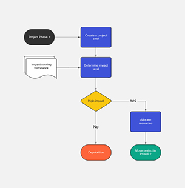
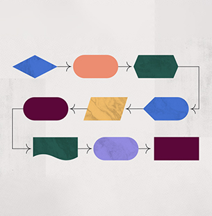

hola!
Hoy hablamos sobre el diagrama de flujo, que es, para qué sirve y en que
nos ayuda, además realizamos nuestro propio diagrama de
flujo sobre nuestro proyecto con Arduino
internet de las cosas
IOT o internet of things
Un diagrama de flujo es un diagrama que describe un proceso, sistema o algoritmo informático. Se usan ampliamente en numerosos campos para documentar, estudiar, planificar, mejorar y comunicar procesos que suelen ser complejos en diagramas claros y fáciles de comprender.
Por ejemplo: si nosotros queremos realizar una pizza, primero necesitamos los ingredientes, luego de haber conseguido los ingredientes necesitamos realizar la
masa, luego realizamos la salsa y finalmente unimos todo lo que hemos hecho y agregamos los complementos. Para la realización de esta pizza ya contamos con 4 procesos para así obtener un
producto final que seria nuestra pizza.
Los diagramas de flujo emplean rectángulos, óvalos, diamantes y otras numerosas figuras para definir el tipo de paso, junto con flechas conectoras que establecen el flujo y la secuencia. Pueden variar desde diagramas simples y dibujados a mano hasta diagramas exhaustivos creados por computadora que describen múltiples pasos y rutas. Si tomamos en cuenta todas las diversas figuras de los diagramas de flujo, son uno de los diagramas más comunes del mundo, usados por personas con y sin conocimiento técnico en una variedad de campos.